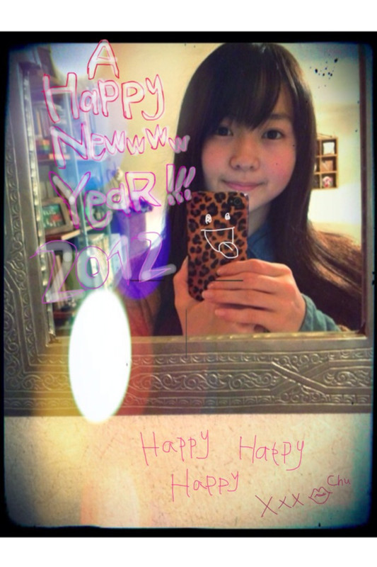

| 2012/01 01 Sun | 43回目*marika |
a HaPpy hAPpY NeWww YEaR!!!
あけましておめでとうございます ♡
新しい年は神社で家族と迎えました***
ケータイの画面見ながら
ぴょん
とジャンプして年を迎えました。

おせちおいしかった~
今年は乃木坂46
デビューの年になります。
去年は乃木坂46のメンバーにいるのが
夢みたいにいろいろなイベントなど
してきました。
これからいろいろな経験をするのを
覚悟にきめて、全力で頑張っていきます!!
笑顔を忘れない!
沢山の方に乃木坂46を
知ってもらえますように....
どんなことがあっても
家族、友達、
みなさん、
メンバー、
スタッフさん方が
います。
毎日感謝を忘れない!

このしゃしんすっぺんぺんなんですよ!!
ずっと暖房してたから
ほっぺたチークしてるみたいでしょ??
みんなでHaPpYな年に
していきましょう☆
これからも伊藤万理華を
よろしくお願いします:D!!!
明日も元気に頑張ろ----- ☆

LOVE
ベビたん*****bA by marika